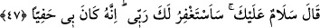

Sanki şöyle denilmiştir: “Peki babası İbrahim’den bu nasihatleri dinledikten sonra ne
dedi?” İşte babası bundan sonra inadında ısrar ederek “dedi ki: “Ey İbrahim! Sen
benim tanrılarımdan yüz mü çeviriyorsun?” Burada yüz çevirmenin yadırganmasında
bir çeşit taaccüb vardır. Yani sanki babasına göre; başkalarını yüz çevirmeye teşvik
etmek bir tarafa, kendisinin yüz çevirmesi bile akıllı bir kimsenin yapacağı bir şey
degildir.
“Eğer” onlara tapmayı yasaklamaktan “vazgeçmezsen, andolsun seni” ölünceye
veya benden uzaklaşıncaya kadar “taşlarım.” Bu taşlamanın dil ile olacağı da
söylenmiştir. Yâni kötü söz söyler ve yererim. er-Racîm kelimesi de buradandır, lânetle
taşlanmış demektir. “er-Recm”in aslı taşlamak demektir. “Uzun süre benden ayrıl git”
benden sakın, beni terk et ve benimle konuşma!
47. (İbrahim): “Selâm sana, senin için Rabb’imden mağfiret dileyeceğim.
Doğrusu O, bana çok lütufkârdır.” dedi.
İbrahim: “Selâm sana” yâni ben gidiyorum ve sana vedâ ediyorum, dedi. Bu selâm,
lütuf ve ihsan selâmı değil ayrılık selâmıdır. Çünkü bu, “Size selâm olsun, biz
cahilleri istemeyiz.” (el-Kasas, 28/55) âyetinde de olduğu gibi onun için bir duâ değil,
kötülüğe iyilikle karşılık verme yoluyla söylenmiştir.
İnatçılık gösterdiğinde kendisine nasihat edilen kimseyi terk etmenin câiz olduğuna
delildir. Yâni benden kurtuldun. Sana artık benden bir kötülük gelmez ve sana seni
incitecek bir şey söylemem. Fakat “Senin için Rabb’imden mağfiret dileyeceğim.”
Yani seni tevbeye muvaffak kılarak mağfiret etmesini ve seni îmâna iletmesini
Rabb’imden dileyeceğim. Nitekim “Babamı affet” ifâdesinin sebebi olan “çünkü o
sapıtmışlardandır.” (eş-Şuarâ, 26/86) ifâdesinden de onun îmâna ulaştırılmasını
isteyeceği ortaya çıkmaktadır.
Bu mânâda kâfir bir kimseye küfür üzere öleceği belli olmadan mağfiret dilemenin
câiz olduğunda şüphe yoktur. Ancak mahzur, onun küfürde kaldığını görerek ona
mağfiret dilemektedir. Çünkü aklen ve naklen bunu câiz gösterecek hiç bir şey yoktur.
Küfür üzere öldükten sonra ona mağfiret dilemeyi ise akıl engellemez, bunu
engelleyen nakildir. Çünkü Hz. Peygamber (a.s.), amcası Ebû Tâlib hakkında: “Nehy
edilmediğim sürece sana mağfiret dileyeceğim.”[21] dedi. Bunun üzerine şu âyet
indirildi: “Peygambere ve mü’minlere müşriklere mağfiret dilemek yaraşmaz...”
(et-Tevbe, 9/173)
İbrahim’in babasına olan bu vaadi, ve “Senin için elbette mağfiret dileyeceğim”,
“Babamı affet...” gibi âyetlerde ifâde edilenler, babasının durumu belli olmadan ve
babasının îmân etmesinden ümidini kesmeden önce idi. Babasının küfürden yana tavır